Stone Threshold at the Square's Edge: A Narrative Deep Dive into 1–3 Union Square West
Every previously italicized phrase is highlighted and colour-coded by source. Where the source page is on file, clicking the highlight opens the scan.
Audio track — playable in the HTML version of this document.
At the acute northwest corner where East Fourteenth Street meets Union Square West stands a commercial pile of profound art-historical consequence, valued not merely for its ornamental exuberance but for its status as a hinge-point in the evolution of the American tall building. The documentary record fixes its authorship and its moment with clarity, for it is remembered as (R. H. Robertson's Lincoln Building (1885), at the northwest corner of Fourteenth Street and Broadway (Union Square West), was as substantial as any office building downtown.) It is, in the fullest sense, a chrysalis specimen caught mid-metamorphosis between the age of the load-bearing masonry wall and the age of the fully articulated steel cage.
The site was not always so consequential. Its earliest record is one of pure absence, for (In the 1815 Blue Book, on 1 Union Square West, there is reference to 0 structures.) The ground itself was a creature of the city's geometry, since (When the Commissioners Map of 1807-11 first laid out Manhattan's grid plan, the acute angle where Bloomingdale Road (now Broadway) intersected the bowery at 16th Street demarcated an island of land that was dubbed Union Place.) What began as marginal terrain was steadily reclaimed, for (Initially, the poor built shanties there, but by 1839, Union Square (as it came to be known) had been graded, paved, and fenced in, and it was set aside for military and civic parades and festivities), until at last (By the 1850s, mansions had sprung up around the picturesque square.) The corner would eventually surrender its domestic character to the vertical ambitions of the age, since (Within a few decades, tall commercial buildings, like the nine-story Lincoln, replaced the mansions as the city grew northward.)
The building embodies a hybrid tectonic condition in which an interior armature of metal operates in concert with, rather than in place of, its perimeter walls, for (Combining metal-skeleton interior construction with masonry-bearing walls, the Lincoln represents a transitional phase in skyscraper construction.) The threshold it approaches but does not cross is a precise one, since (The essential criterion of a true skyscraper is the replacement of load-bearing walls with a steel skeleton that provides all of the structural support.) The Lincoln Building has not yet attained that emancipation; its walls remain palpably tectonic and their gravitational labor unconcealed, for (In the Lincoln Building, Romanesque Revival arcades articulate the skeletal construction, although the massiveness of the walls is evident, and the horizontality of traditional masonry is further emphasized by the stacked fenestration.) The eye is thus drawn along the width rather than propelled up the height—a signature of the pre-steel sensibility. The engineering historians confirm the same reading, for (The budding, faced in limestone, granite, redbrick, and terra cotta, marks an important transitional phase in skyscraper engineering; it was constructed with a metal framing in combination with traditional masonry bearing walls.)
The elevation is disciplined according to the (Tripartite Typology)—base, shaft, and capital transposed onto the commercial block and read as analogous to the column. Yet Robertson's handling drew contemporary censure for its want of hierarchical clarity, since it was judged (A not-quite-resolved essay in the Romanesque, with many layers of motifs rather than a dominant arcade, Robertson's first tall building was said to possess, according to the Record and Guide, "a wandering, hesitating air about it as though the architect could not hit upon the right word for his idea and took refuge in redundancy.) This redundancy is, to the modern eye, precisely the source of the building's dense textural richness—a palimpsest of (Layered Arcades) rather than a single triumphal arch-motif.
The material vocabulary is a deliberately variegated masonry ensemble, for the building is (Sheathed in Indiana limestone, granite, and brick, the building is ornamented with exceptional details: acanthus scrolls, Byzantine capitals, griffins, and human and lion heads, all carved in terra cotta.) The governing idiom throughout is (Romanesque-Revival), and the chromatic register moves from a warm, earthen base value—recorded as (Tumbleweed - 222 166 131)—rising toward a pale, luminous crown recorded as (Pearl White - 238 235 218), an atmospheric perspective built into the very substance of the wall. The base is executed in (Indiana Limestone) and grounded upon (Granite Bulkheads), the granite reserved for those thresholds where abrasion demands the hardest igneous stone; the upper envelope continues in (Indiana Limestone) supplemented by (Terra Cotta) and (Light Brick). A critical subtlety of surface is the deliberate juxtaposition described as (Smooth and Rock Faced Indiana Limestone)—the rusticated ashlar delivering the quarried gravitas of the Romanesque, the smooth stone furnishing the refined foil against which carved ornament registers with crispness.
The principal entrance is a (4 Bays) arrangement dominated by a deeply modeled (Round Arch)—the semicircular arch that is the very grammar of the revival—springing from (Engaged Columns) embedded in the wall plane. The archivolt marries two contrasting idioms: the classical, vegetal (Acanthus Scrolls) with their fleshy, involuted leaf-forms, set in pointed counterpoint against the jagged, medieval chevron of the (Norman Zigzag Molding). The coexistence of these vocabularies—one botanical and antique, one geometric and Anglo-Norman—epitomizes the eclectic layering of the whole.
The window treatment is governed by a (Double Height Arcade), in which openings that are (Arched) rise across two stories with an ecclesiastical cadence. Each is defined by (Limestone Voussoirs)—wedge-shaped stones whose radiating joints proclaim the compressive logic of the arch—and carried upon (Byzantine Columns) terminating in (Byzantine Capitals), those richly undercut, encrusted basket-and-foliate forms of Late Antique derivation. Between the arches, the (Foliated Spandrels) are worked in low-relief foliage; the openings are dignified by (Molded Enframements) and punctuated at their impost levels by (Corbels), the projecting brackets that visually receive descending loads.
A menagerie of ornament of exceptional refinement is dispersed across pier, spandrel, and cornice. Chief among the figural motifs is the (Griffin)—the composite beast pressed here into commercial heraldry—marching alongside bands of (Acanthus Scrolls) and clusters of (Byzantine Capitals) set upon the (Limestone Piers) that establish the vertical armature. Most arresting is the population of (Human Heads) and (Lion Heads), anthropomorphic and leonine masks peering from the wall in the tradition of the medieval label-stop and corbel-head, performing at once the office of ornamental delight and of structural expression.
The composition terminates in a boldly (Projecting Cornice), cantilevered from the wall plane to cast a deep shadow against the sky. Its most celebrated feature is an extraordinary fenestrated frieze, described from the street as (Romanesque Revival granite crowned with a cornice of 40 little windows with interstitial paired columns)—a quasi-loggia effect reminiscent of the dwarf galleries ringing Lombard-Romanesque apses, and a member so memorable that the visitor is urged simply to (Note the multiwindow cornice.) Enriching this crown is a cascade of further ornament: a (Band of Bosses), the load-receiving (Human/Lion Corbels), the interlaced ribbon of the (Byzantine Guilloche), colonnettes twisted into helical couplets as (Paired Spiral Columns), a course of (Dentils), shadow-catching (Recessed Panels), the convex quarter-round of the (Ovolo Molding), and, crowning all, an (Acanthus Scroll Band) that returns at the summit to the vegetal theme announced below at the entrance arch.
The successive land books and atlases register the building's slow consolidation and rise. The three older houses had by century's end been gathered under a single name, for (In the 1897 Bromleys Atlas, on 1 Union Square West, there is written 'Lincoln Bldg' as well as reference to 1 Structure; Brick building with Stone front.) The identity persisted, since (In the 1916 Atlas of the Borough of Manhattan, on 1 Union Square West, there is written 'Lincoln Bldg.' as well as reference to 1 Structure; 3 Story Brick building with Store and Elevators.) By the interwar years the full commercial height is acknowledged, for (In the 1930 Land Book of the Borough of Manhattan, on 1 Union Square West, there is reference to 2 structures; 10 Story Brick building with Store and Elevators, 4 Story Brick building with Basement and Store and 2 Story Brick Extension), and the name endured to mid-century, when (In the 1955 Manhattan Land Book, on 1 Union Square West, there is written 'LINCOLN BLDG' as well as reference to 1 Structure; 10 Story Brick or Stone or Concrete building with Store and Elevators.) More than a century after its completion, the fabric was addressed anew, for (In late 2015, plans were approved by the NYC Department of Buildings for facade repairs and roof replacement)—the two interventions most vital to a masonry envelope of this age and ornamental density.
The building participates in a dialogue of façades along the west flank of the square. Its principal interlocutor is the structure immediately to its north, for (The block between 14th and 15th Streets offers two solid and accomplished historic structures: the Spingler Building (5 Union Square West 1897. W H. Hume and Sons) and the Lincoln Building (1 Union Square West, 1889. R. H. Robertson).) The two are close kin yet part company in dialect, since (The two facades share many compositional details, but one architect has chosen a classical vocabulary while the other has embraced the Romanesque.) Its recognition as a monument came not through unprompted reverence but through anxiety over the district's future, for (Concerns about the fate of historic buildings on other sites around the square led to the designation as landmarks of the Lincoln Building (R. H. Robertson, 1890), 1-3 Union Square West; the Bank of the Metropolis (Bruce Price, 1903), 31 Union Square West; the Century Building (William Schickel, 1881), 33 East Seventeenth Street; the Everett Building (Starrett & Van Vleck, 1908), 45 East Seventeenth Street; and the Germania Life Insurance Company Building (D'Oench &. Yost, 1911), later the Guardian Life Building, 50 Union Square East.)
The building is, in sum, a masterwork of the transitional moment, and it endures within the canon precisely because (The Lincoln Building is representative of the early skyscraper form as it evolved in New York, where architects chose to adapt already-popular styles to this new building type.) Its forty little cornice windows and their interstitial paired columns crown a structure that is at once a document of engineering history and a bravura performance in polychrome masonry ornament—a Romanesque Revival essay of the highest order, standing sentinel at the corner of Union Square West and Fourteenth Street.
Every highlighted quote, in order of appearance, correlated to its underlying source. The swatch matches the highlight colour in the text.
| # | Verbatim Quote (abbreviated) | Source (Author, Title, Year, Page) |
|---|---|---|
| 1 | “R. H. Robertson's Lincoln Building (1885), at the northwest corner of Fourteenth Street and Broadway (Union Square West), was as substantial as any office building…” | Stern, New York 1880, 1999, p. 442 [page scan] |
| 2 | “In the 1815 Blue Book, on 1 Union Square West, there is reference to 0 structures.” | Sackersdorff, 1815 Blue Book, p. 3 [page scan] |
| 3 | “When the Commissioners Map of 1807-11 first laid out Manhattan's grid plan, the acute angle where Bloomingdale Road (now Broadway) intersected the bowery at 16th Street…” | Spielvogel, The Landmarks of New York, 2016, p. 346 [page scan] |
| 4 | “Initially, the poor built shanties there, but by 1839, Union Square (as it came to be known) had been graded, paved, and fenced in, and it was set aside for military and…” | Spielvogel, The Landmarks of New York, 2016, p. 346 [page scan] |
| 5 | “By the 1850s, mansions had sprung up around the picturesque square.” | Spielvogel, The Landmarks of New York, 2016, p. 346 [page scan] |
| 6 | “Within a few decades, tall commercial buildings, like the nine-story Lincoln, replaced the mansions as the city grew northward.” | Spielvogel, The Landmarks of New York, 2016, p. 346 [page scan] |
| 7 | “Combining metal-skeleton interior construction with masonry-bearing walls, the Lincoln represents a transitional phase in skyscraper construction.” | Spielvogel, The Landmarks of New York, 2016, p. 346 [page scan] |
| 8 | “The essential criterion of a true skyscraper is the replacement of load-bearing walls with a steel skeleton that provides all of the structural support.” | Spielvogel, The Landmarks of New York, 2016, p. 346 [page scan] |
| 9 | “In the Lincoln Building, Romanesque Revival arcades articulate the skeletal construction, although the massiveness of the walls is evident, and the horizontality of…” | Spielvogel, The Landmarks of New York, 2016, p. 346 [page scan] |
| 10 | “The budding, faced in limestone, granite, redbrick, and terra cotta, marks an important transitional phase in skyscraper engineering; it was constructed with a metal…” | Postal & Dolkart, Guide to New York City Landmarks, 2009, p. 76 [page scan] |
| 11 | “Tripartite Typology” | LPC, Union Square, 1890, p. 1 [page scan] |
| 12 | “A not-quite-resolved essay in the Romanesque, with many layers of motifs rather than a dominant arcade, Robertson's first tall building was said to possess, according to…” | Stern, New York 1880, 1999, p. 442 [page scan] |
| 13 | “Layered Arcades” | LPC, Union Square, 1890, p. 1 [page scan] |
| 14 | “Sheathed in Indiana limestone, granite, and brick, the building is ornamented with exceptional details: acanthus scrolls, Byzantine capitals, griffins, and human and…” | Spielvogel, The Landmarks of New York, 2016, p. 346 [page scan] |
| 15 | “Romanesque-Revival” | LPC, Union Square, 1890, p. 1 [page scan] |
| 16 | “Tumbleweed - 222 166 131” | LPC, Union Square, 1890, p. 1 [page scan] |
| 17 | “Pearl White - 238 235 218” | LPC, Union Square, 1890, p. 1 [page scan] |
| 18 | “Indiana Limestone” | LPC, Union Square, 1890, p. 1 [page scan] |
| 19 | “Granite Bulkheads” | LPC, Union Square, 1890, p. 1 [page scan] |
| 20 | “Indiana Limestone” | LPC, Union Square, 1890, p. 1 [page scan] |
| 21 | “Terra Cotta” | LPC, Union Square, 1890, p. 1 [page scan] |
| 22 | “Light Brick” | LPC, Union Square, 1890, p. 1 [page scan] |
| 23 | “Smooth and Rock Faced Indiana Limestone” | LPC, Union Square, 1890, p. 1 [page scan] |
| 24 | “4 Bays” | LPC, Union Square, 1890, p. 1 [page scan] |
| 25 | “Round Arch” | LPC, Union Square, 1890, p. 1 [page scan] |
| 26 | “Engaged Columns” | LPC, Union Square, 1890, p. 1 [page scan] |
| 27 | “Acanthus Scrolls” | LPC, Union Square, 1890, p. 1 [page scan] |
| 28 | “Norman Zigzag Molding” | LPC, Union Square, 1890, p. 1 [page scan] |
| 29 | “Double Height Arcade” | LPC, Union Square, 1890, p. 1 [page scan] |
| 30 | “Arched” | LPC, Union Square, 1890, p. 1 [page scan] |
| 31 | “Limestone Voussoirs” | LPC, Union Square, 1890, p. 1 [page scan] |
| 32 | “Byzantine Columns” | LPC, Union Square, 1890, p. 1 [page scan] |
| 33 | “Byzantine Capitals” | LPC, Union Square, 1890, p. 1 [page scan] |
| 34 | “Foliated Spandrels” | LPC, Union Square, 1890, p. 1 [page scan] |
| 35 | “Molded Enframements” | LPC, Union Square, 1890, p. 1 [page scan] |
| 36 | “Corbels” | LPC, Union Square, 1890, p. 1 [page scan] |
| 37 | “Griffin” | LPC, Union Square, 1890, p. 1 [page scan] |
| 38 | “Acanthus Scrolls” | LPC, Union Square, 1890, p. 1 [page scan] |
| 39 | “Byzantine Capitals” | LPC, Union Square, 1890, p. 1 [page scan] |
| 40 | “Limestone Piers” | LPC, Union Square, 1890, p. 1 [page scan] |
| 41 | “Human Heads” | LPC, Union Square, 1890, p. 1 [page scan] |
| 42 | “Lion Heads” | LPC, Union Square, 1890, p. 1 [page scan] |
| 43 | “Projecting Cornice” | LPC, Union Square, 1890, p. 1 [page scan] |
| 44 | “Romanesque Revival granite crowned with a cornice of 40 little windows with interstitial paired columns” | AIA, AIA Edition 3, 1988, p. 186 [page scan] |
| 45 | “Note the multiwindow cornice.” | Wolfe, New York 15 Walking Tours, 2003, p. 251 [page scan] |
| 46 | “Band of Bosses” | LPC, Union Square, 1890, p. 1 [page scan] |
| 47 | “Human/Lion Corbels” | LPC, Union Square, 1890, p. 1 [page scan] |
| 48 | “Byzantine Guilloche” | LPC, Union Square, 1890, p. 1 [page scan] |
| 49 | “Paired Spiral Columns” | LPC, Union Square, 1890, p. 1 [page scan] |
| 50 | “Dentils” | LPC, Union Square, 1890, p. 1 [page scan] |
| 51 | “Recessed Panels” | LPC, Union Square, 1890, p. 1 [page scan] |
| 52 | “Ovolo Molding” | LPC, Union Square, 1890, p. 1 [page scan] |
| 53 | “Acanthus Scroll Band” | LPC, Union Square, 1890, p. 1 [page scan] |
| 54 | “In the 1897 Bromleys Atlas, on 1 Union Square West, there is written 'Lincoln Bldg' as well as reference to 1 Structure; Brick building with Stone front.” | Bromley, 1897 Bromleys Atlas, p. 19 [page scan] |
| 55 | “In the 1916 Atlas of the Borough of Manhattan, on 1 Union Square West, there is written 'Lincoln Bldg.' as well as reference to 1 Structure; 3 Story Brick building with…” | G W Bromley & Co, 1916 Atlas of the Borough of Manhattan, p. 54 [page scan] |
| 56 | “In the 1930 Land Book of the Borough of Manhattan, on 1 Union Square West, there is reference to 2 structures; 10 Story Brick building with Store and Elevators, 4 Story…” | Bromley, 1930 Land Book of the Borough of Manhattan, p. 53 [page scan] |
| 57 | “In the 1955 Manhattan Land Book, on 1 Union Square West, there is written 'LINCOLN BLDG' as well as reference to 1 Structure; 10 Story Brick or Stone or Concrete…” | Bromley, 1955 Manhattan Land Book, p. 43 [page scan] |
| 58 | “In late 2015, plans were approved by the NYC Department of Buildings for facade repairs and roof replacement” | Spielvogel, The Landmarks of New York, 2016, p. 346 [page scan] |
| 59 | “The block between 14th and 15th Streets offers two solid and accomplished historic structures: the Spingler Building (5 Union Square West 1897. W H. Hume and Sons) and…” | Hennessy, Walking Broadway, 2020, p. 97 [page scan] |
| 60 | “The two facades share many compositional details, but one architect has chosen a classical vocabulary while the other has embraced the Romanesque.” | Hennessy, Walking Broadway, 2020, p. 97 [page scan] |
| 61 | “Concerns about the fate of historic buildings on other sites around the square led to the designation as landmarks of the Lincoln Building (R. H. Robertson, 1890), 1-3…” | Stern, New York 2000, 2006, p. 377 [page scan] |
| 62 | “The Lincoln Building is representative of the early skyscraper form as it evolved in New York, where architects chose to adapt already-popular styles to this new…” | Postal & Dolkart, Guide to New York City Landmarks, 2009, p. 76 [page scan] |
13 scanned pages, one per cited source page. Each lists the highlighted quotes drawn from it.
Quotes drawn from this page: 1 12
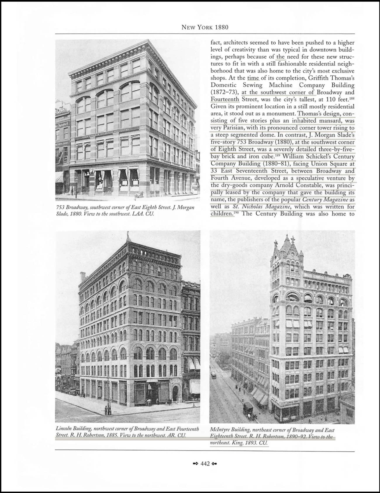
Quotes drawn from this page: 2
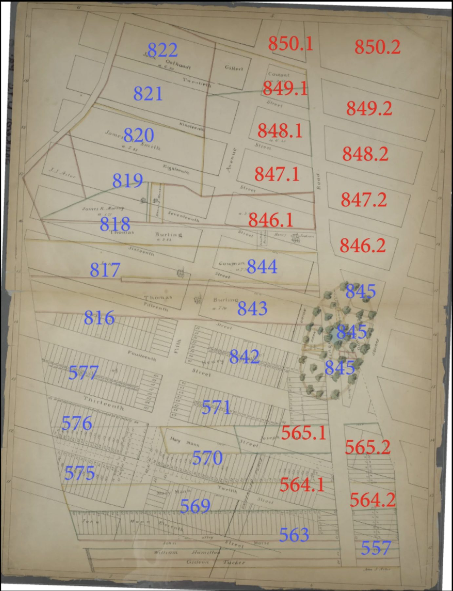
Quotes drawn from this page: 3 4 5 6 7 8 9 14 58
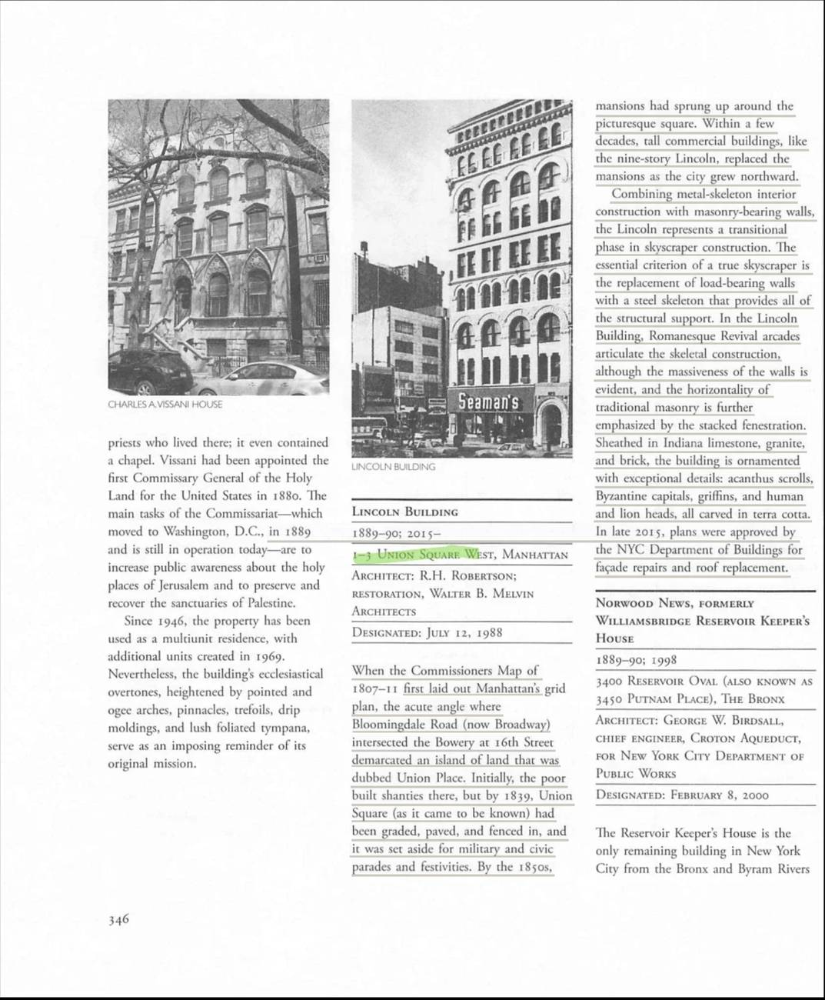
Quotes drawn from this page: 10 62
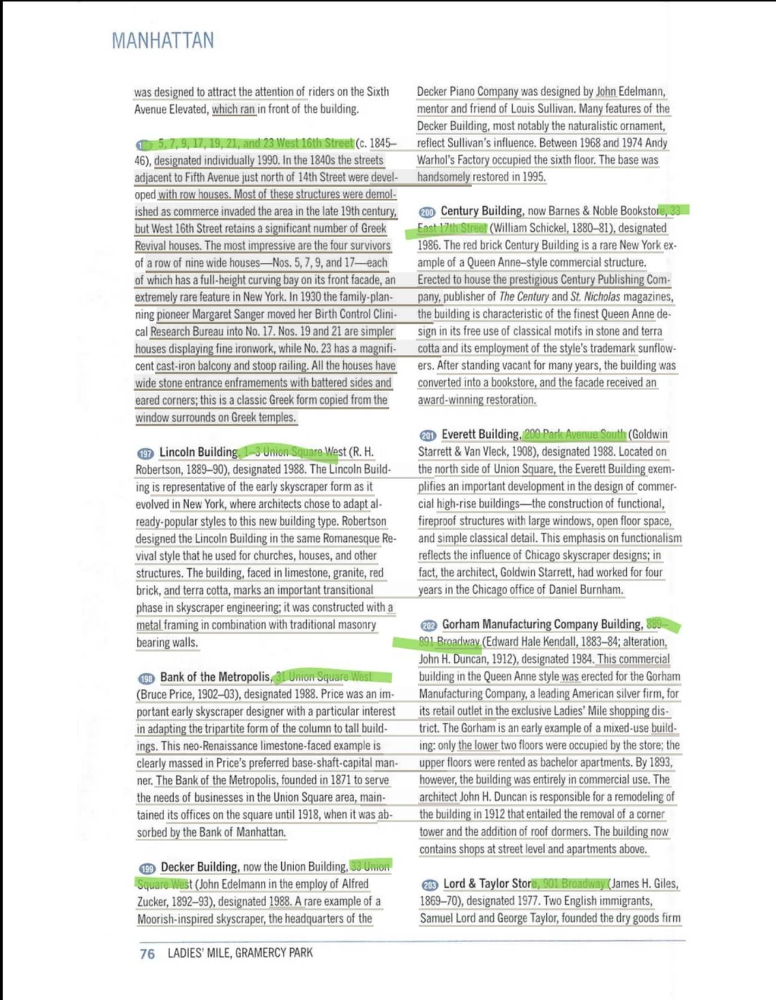
Quotes drawn from this page: 11 13 15 16 17 18 19 20 21 22 23 24 25 26 27 28 29 30 31 32 33 34 35 36 37 38 39 40 41 42 43 46 47 48 49 50 51 52 53
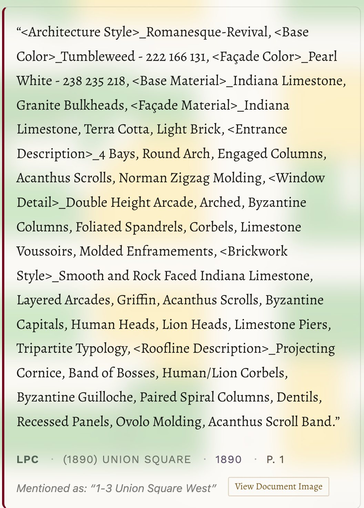
Quotes drawn from this page: 44
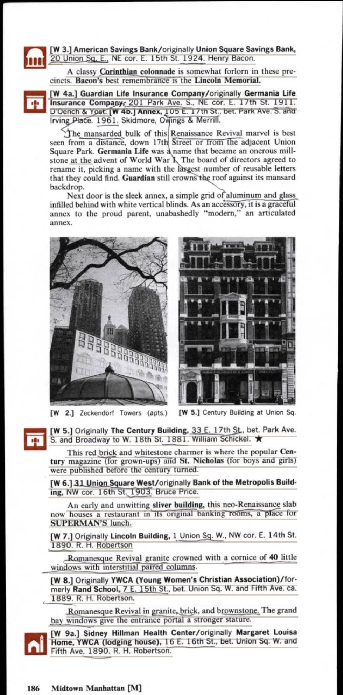
Quotes drawn from this page: 45
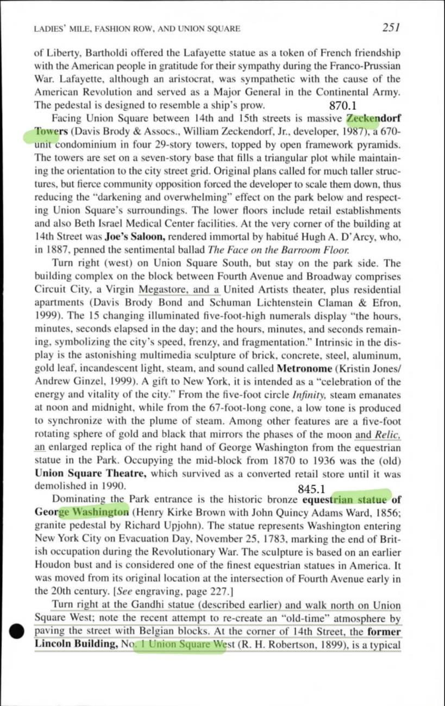
Quotes drawn from this page: 54
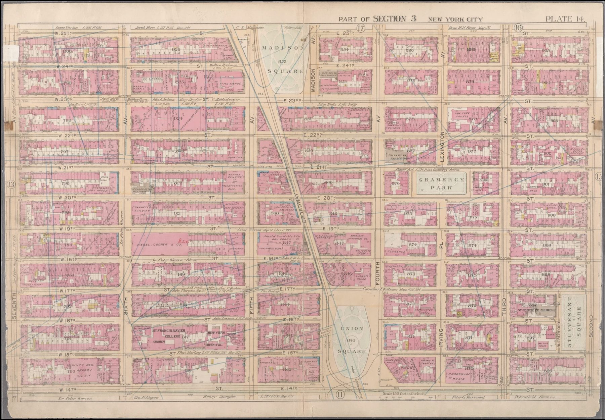
Quotes drawn from this page: 55
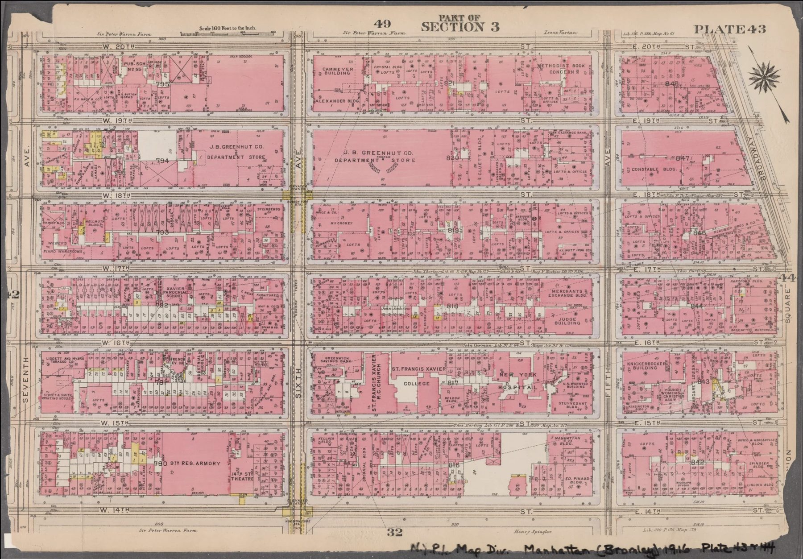
Quotes drawn from this page: 56
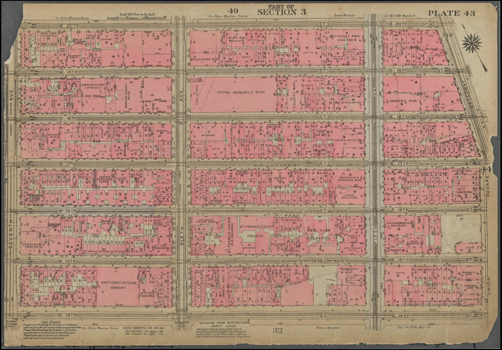
Quotes drawn from this page: 57
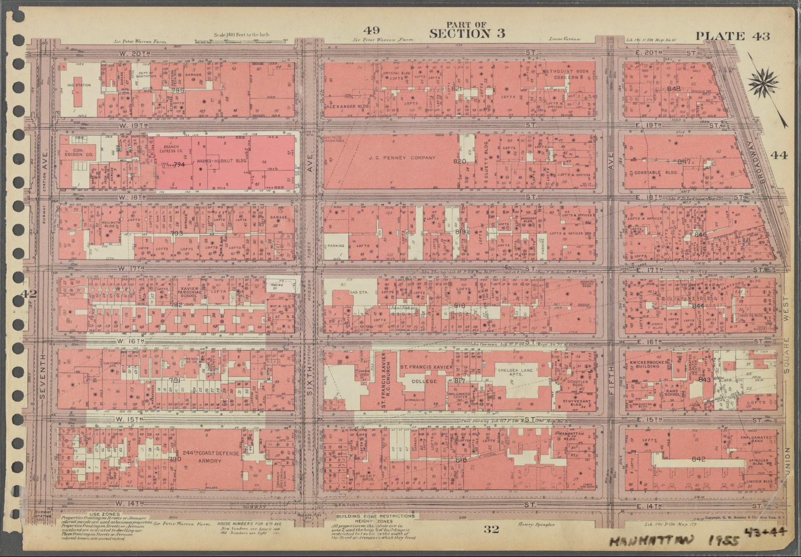
Quotes drawn from this page: 59 60
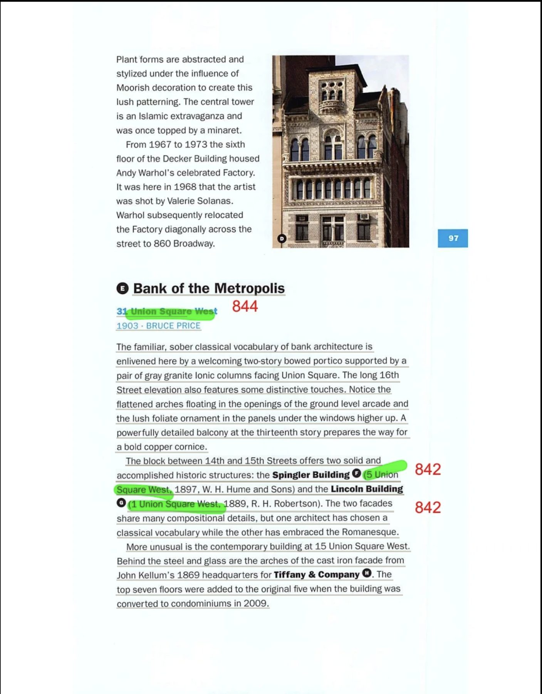
Quotes drawn from this page: 61
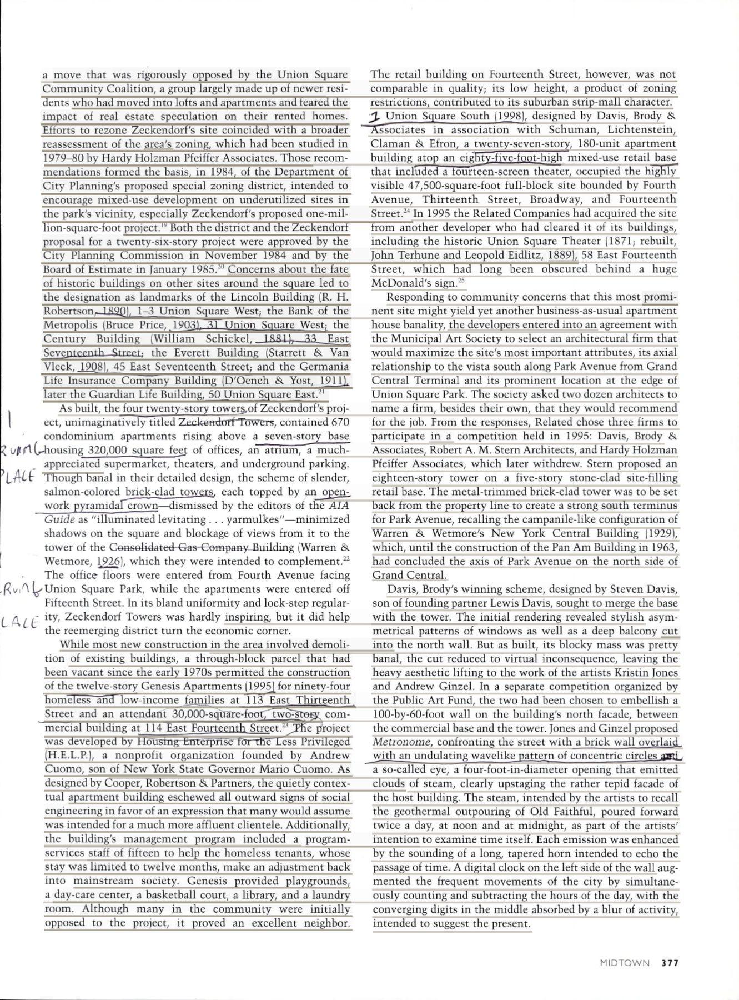